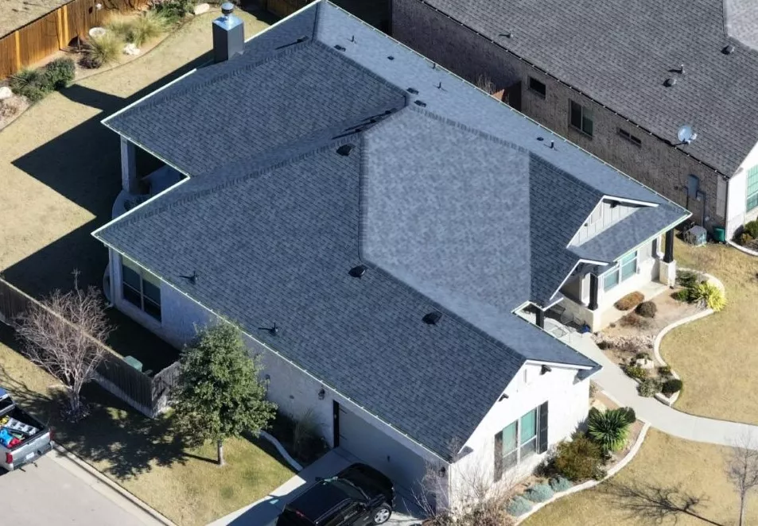

Reliable Roofing Services in Bell County
Verstera Roofing serves our Bell County community by providing trustworthy, high-quality shingle, tile, and metal roofing solutions to our residential and commercial clients. Our experienced team understands the unique roofing challenges that Central Texas weather presents - from intense summer heat to severe thunderstorms and damaging hailstorms.
We're proud to be a local company deeply connected to the Bell County community. Our team lives and works in the area, giving us an intimate understanding of local building codes, permit requirements, and the specific roofing needs of properties in Temple, Belton, Killeen, Harker Heights and other local communities.
Whether you need a complete roof replacement after storm damage, repairs for leaks, or preventative maintenance, our Bell County roofing experts are here to help with prompt, professional service that you can count on.
Our Bell County Roofing Services
Residential Roofing
Protect your Bell County home with our premium residential roofing solutions, from traditional asphalt shingles to more eco-friendly metal roofing options designed to increase the energy-efficiency of your home in this hot Texas weather.
Commercial Roofing
Durable commercial roofing systems for businesses throughout Bell County, designed to minimize disruption to operations while providing lasting protection.
Roof Repair
Fast, reliable roof repairs for Bell County properties, addressing hail and wind damage from storms, aging, or other issues before they become major problems.
Leak Repair
Leaks from hail damage directly lead to water damage and mold growth, threatening the wellbeing and structural integrity of your home! Get your roof inspected immediately after hailstorms and ask for our expert leak detection and repair services.
Tile Roofs
Beautiful, long-lasting tile roofing options perfectly suited to Bell County's climate and architectural styles, providing both protection and curb appeal.
Metal Roofs
Energy-efficient metal roofing solutions that stand up to Bell County's hot summers and severe weather events while helping reduce cooling costs.
Need Roofing Services in Bell County?
Whether you're in Temple, Belton, Killeen, Harker Heights, or anywhere else in Bell County, Verstera Roofing is here to help with all your shingle, tile, or metal roofing needs. Contact us today for a free inspection and estimate.
Contact Us Today